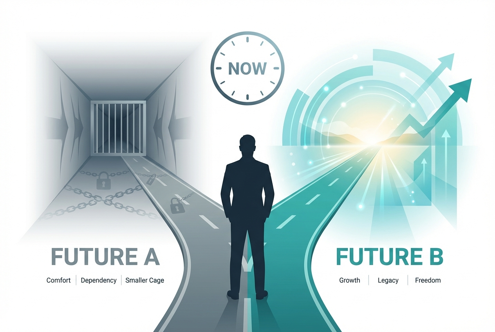

*For Start Right 30 graduates ready for the complete picture*
Throughput-90 takes you from Steps 1-3 to the complete 9-step Strategy Assessment. In 90 days, you'll have the full picture—and a GO/NO-GO decision you can trust with your career.

If you're reading this, you've already done something most leadership teams never do.
You built a foundation.
Through Start Right 30, you and your team developed clarity on your context (Step 1), aligned on goals (Step 2), and crystallized a strategy (Step 3).
That's more than 90% of transformations ever achieve. Seriously.
But here's what you probably sense:
You've got a strategy. But you don't know if you can actually execute it. You've got goals. But you haven't validated whether your organisation can reach them. You've got clarity. But not certainty.
The O2O Strategy Phase has 9 steps for a reason. Steps 4-9 are where strategy meets reality:
You've completed 3. Here's the complete picture.
Via Start Right 30
Your environment mapped
Your targets aligned
Your strategy crystallized
Platform, Execution & Decision
Your platform approach
Your ecosystem model
Your investment decision
Your portfolio scope
Your delivery approach
Your mission clarity
Here's a truth nobody wants to talk about:
Most transformation decisions are made without adequate information.
Leaders commit hundreds of millions of pounds based on a business case built on assumptions, a strategy deck that hasn't been stress-tested, enthusiasm that fades when reality hits, and political pressure to "show progress."
At the end of Step 9, you'll have a definitive decision—backed by a complete assessment of context, strategy, platform, ecosystem, and execution readiness.
Some Throughput-90 cohorts end with a NO-GO decision. That's not failure—that's the system working.
Better to know at 90 days than at 9 months.
90-Day Strategy Completion Programme
Requires Start Right 30 completion
After a GO decision, continue to:
OpsMax-360: Full Execution Support →